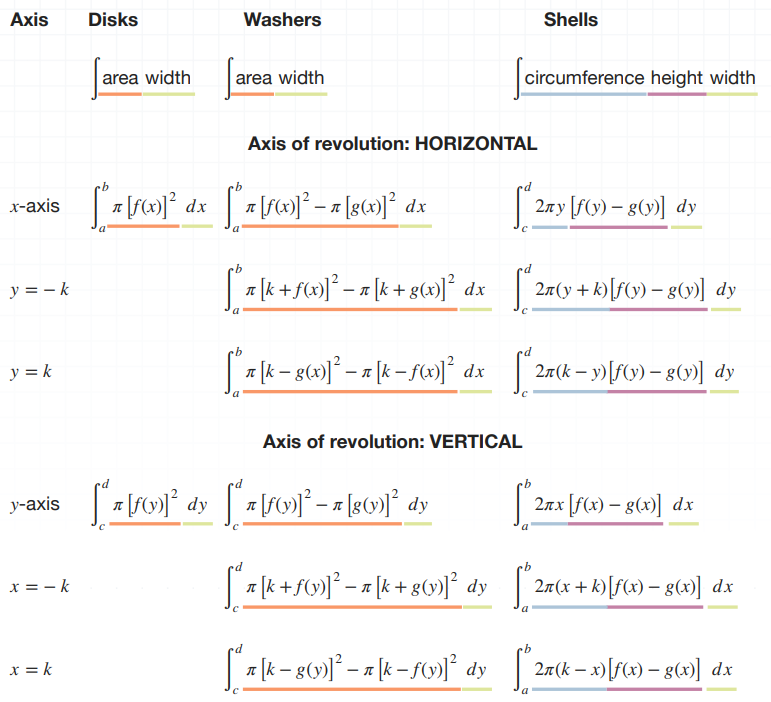

Calculus II, Pt. 2
Applications of Integrals - Area Between Curves
In these kinds of problems, you are given the equations of two curves, and asked to find the area between them. Finding the area is going to require three pieces of information:
1. Orientation of Curves
a) If one curve is entirely above another:
$A = \int_{x=a}^{x=b} f(x) - g(x) ~dx$
- $[a,b]$ is the interval upon which we will find the area
- $f(x)$ is the higher function
- $g(x)$ is the lower function
b) If one is entirely to the right or left of another:
$A = \int_{y=a}^{y=b} f(y) - g(y) ~dy$
- $f(y)$ is the right function
- $g(y)$ is the left function
2. The points where the curves intersect, or a given interval on which to evaluate area
- a) If your problem doesn't specify an interval, find the points where the curves intersect. They become your interval.
- b) If an interval is specified, check to see if the curves intersect each other inside the given interval
3. Which curve is higher or lower, or if the orientation is left-right, then which curve is on which side
a) If there is a higher-lower switch, use the formula:
$A = \int_{x=a}^{x=c} f(x) - g(x) dx + \int_{x=c}^{x=b} g(x) - f(x) dx$
b) If you have a left-right switch, use the following formula:
$A = \int_{y=a}^{y=c} f(y) - g(y) dy + \int_{y=c}^{y=b} g(y) - f(y) dy$
Example:
Find the area between these curves:
$y = x^2 - 1$
$y = x^4 - x^2$
$x^4 - x^2$ is the higher function and $x^2 - 1$ is the lower function.
$A = \int_{x=a}^{x=b} f(x) - g(x) dx$
Because the question didn't identify an interval, the second step is to find the points of intersection. Since both curves are equal to $y$, we can set them equal to each other and solve for $x$.
$x^2 - 1 = x^4 - x^2$
$x^4 - 2x^2 + 1 = 0$
$(x^2 - 1)^2 = 0$
$x^2 - 1 = 0$
$x^2 = 1$
$x = \pm 1$
The points of intersection are $x=-1$ and $x=1$ so we're trying to find the area enclosed by those points.
In order to figure out which function is higher, we'll pick an $x$ value between the points of intersection and plug it into the equations of the original functions (we'll use $x=0$).
$0^2 - 1 = -1$
$0^4 - 0^2 = 0$
$0 \gt -1$, so $x^4 - x^2$ is greater than $x^2 - 1$ between the points of intersection. We now plug these values into the following equation:
$A = \int_{x=a}^{x=b} f(x) - g(x) dx$
$A = \int_{-1}^1 (x^4 - x^2) - (x^2 - 1) dx$
$A = \int_{-1}^1 x^4 - 2x^2 + 1 dx$
$A = \frac{1}{5}x^5 - \frac{2}{3}x^3 + x \bigg|_{-1}^1$
$A = (\frac{1}{5} - \frac{2}{3} + 1) - (- \frac{1}{5} + \frac{2}{3} - 1)$
$A = \frac{1}{5} - \frac{2}{3} + 1 + \frac{1}{5} - \frac{2}{3} + 1$
$A = \frac{2}{5} - \frac{4}{3} + 2$
$A = \frac{6}{15} - \frac{20}{15} + \frac{30}{15}$
$A = \frac{16}{15} \text{ square units}$
Example:
Find the area between the following curves:
$y^2 = 4x$
$y = 2x - 4$
$y = 2x-4$ is the right curve and $y^2 = 4x$ is the left curve.
The first equation becomes:
$x = \frac{y^2}{4}$
The second equation becomes:
$x = \frac{y + 4}{2}$
Setting them equal to each other gives:
$\frac{y^2}{4} = \frac{y + 4}{2}$
$2y^2 = 4(y + 4)$
$2y^2 = 4y + 16$
$y^2 = 2y + 8$
$y^2 - 2y - 8 = 0$
$(y+2)(y-4) = 0$
$y = -2 \text{ and } y = 4$
Therefore, we are trying to find the area between $y=-2$ and $y=4$.
We now pick a y-value between the intersection points and plug it into the original formulas to see which is greater between the intersection points.
$x = \frac{0^2}{4} = 0$
$x = \frac{0 + 4}{2} = 2$
We see that the second formula belongs to the greater function within the intersection points. Plugging this into the appropriate formula, we get:
$A = \int{-2}^4 \frac{y + 4}{2} - \frac{y^2}{4} ~dy$
$A = \int_{-2}^4 \frac{2(y+4)}{4} - \frac{y^2}{4} ~dy$
$A = \frac{1}{4} \int_{-2}^4 2(y+4) - y^2 ~dy$
$A = \frac{1}{4} \int_{-2}^4 2y + 8 - y^2 ~dy$
$A = \frac{1}{4} (y^2 + 8y - \frac{1}{3}y^3) \bigg|_{-2}^4$
$A = \frac{1}{4} \left[ 4^2 + 8(4) - \frac{1}{3}(4)^3 \right] - \frac{1}{4} \left[ -2^2 + 8(-2) - \frac{1}{3}(-2)^3 \right]$
$A = \frac{1}{4} \left[ \frac{1}{4} \left( 16 + 32 - \frac{64}{3} \right) - \left( 4 - 16 + \frac{8}{3} \right) \right]$
$A = \frac{1}{4} \left( 16 + 32 - \frac{64}{3} - 4 + 16 - \frac{8}{3} \right)$
$A = \frac{1}{4} \left( \frac{108}{3} \right)$
$A = \frac{108}{12} = 9 \text{ square units }$
Applications of Integrals - Arc Length
The arc length of a function is the length the line of the graph would be if we straightened it (upon some interval). Sometimes the arc length problem will be in the form $y=f(x)$, and other times, $x=g(y)$. If the equation is in the form $y=f(x)$, the interval will be $a \le x \le b$. The equation for arc length is:
$L = \int_a^b \sqrt{ 1 + \left( \frac{dy}{dx} \right)^2 } ~dx$
If the equation is in the form $x=g(y)$, the equation for arc length will be:
$L = \int_c^d \sqrt{ 1 + \left( \frac{dx}{dy} \right)^2 } ~dy$
Example:
Calculate the arc length of $y = ln(sec ~x)$ on the interval $0 \le x \le \frac{\pi}{3}$.
First, we'll calculate $\frac{dy}{dx}$, and then plug it into the arc length formula:
$\frac{dy}{dx} = \frac{sec ~x ~tan ~x}{sec ~x}$
$\frac{dy}{dx} = tan ~x$
Plugging the derivative into the arc length formula:
$L = \int_0^{\frac{\pi}{3}} \sqrt{ 1 + (tan ~x)^2 } ~dx$
$L = \int_0^{\frac{\pi}{3}} \sqrt{ 1 + tan^2 x } ~dx$
$sec^2x$ is equal to $1 + tan^2x$, so we get:
$L = \int_0^{\frac{\pi}{3}} \sqrt{ sec^2x } ~dx$
$L = \int_0^{\frac{\pi}{3}} sec ~x ~dx$
Now, integrate:
$L = ln |sec(x) + tan(x)| \bigg|_0^{\pi/3}$
Now we evaluate over the interval and get:
$L = ln \left| sec \left( \frac{\pi}{3} \right) + tan \left( \frac{\pi}{3} \right) \right| - ln |sec ~0 + tan ~0|$
$L = 1.32$
Example:
Calculate the arc length of the following function over the interval $2 \le y \le 5$.
$x = \frac{2}{3}(y-1)^{3/2}$
Since the function is in the form $x = g(y)$, we have to use the formula:
$L = \int_c^d \sqrt{ 1 + \left( \frac{dx}{dy} \right)^2 } ~dy$
First, we'll calculate $dx/dy$ and then plug it back into the arc length formula.
$\frac{dx}{dy} = (y-1)^{\frac{1}{2}}$
$L = \int_2^5 \sqrt{ 1 + [(y-1)^\frac{1}{2}]^2 } ~dy$
$L = \int_2^5 \sqrt{y} ~dy$
Now, integrate:
$L = \frac{2}{3} y^{\frac{3}{2}} \bigg|_2^5$
Now we evaluate over the interval:
$L = \frac{2}{3}(5)^{\frac{3}{2}} - \frac{2}{3}(2)^{\frac{3}{2}}$
$L = 5.6$
Applications of Integration - Average Value
The formula to find the average value of a function $f(x)$ over the interval $[a,b]$ is:
$f_{avg} = \frac{1}{b-a} \int_a^b f(x) ~dx$
Think about the average value of a function as the average height the function attains above the x-axis.
Example:
Calculate the average value of the function $f(x) = x^3 - 2x + e^{2x}$ over the interval $[3,7]$:
$f_{avg} = \frac{1}{7-3} \int_3^7 x^3 - 2x^2 + e^{2x} ~dx$
$f_{avg} = \frac{1}{4} \int_3^7 x^3 - 2x^2 + e^{2x} ~dx$
Next, break the integral apart by term:
$f_{avg} = \frac{1}{4} \int_3^7 x^3 ~dx + \frac{1}{4} \int_3^7 -2x^2 dx + \frac{1}{4} \int_3^7 e^{2x} ~dx$
$f_{avg} = \frac{1}{4} \int_3^7 x^3 ~dx + \frac{2}{4} \int_3^7 x^2 dx + \frac{1}{4} \int_3^7 e^{2x} ~dx$
Now, integrate:
$f_{avg} = \frac{1}{4} \left( \frac{x^4}{4} \right) \bigg|_3^7 - \frac{2}{4} \left( \frac{x^3}{3} \right) \bigg|_3^7 + \frac{1}{4} \left( \frac{e^{2x}}{2} \right) \bigg|_3^7$
$f_{avg} = \frac{x^4}{16} - \frac{x^3}{6} + \frac{e^{2x}}{8} \bigg|_3^7$
Now we can evaluate on the interval:
$f_{avg} \left[ \frac{7^4}{16} - \frac{7^3}{6} + \frac{e^{2(7)}}{8} \right] - \left[ \frac{3^4}{16} - \frac{3^3}{6} + \frac{e^{2(3)}}{8} \right]$
$f_{avg} = 150,367$
The Mean Value Theorem For Intervals
The mean value theorem for integrals tells us that, for a continuous function $f(x)$, there is at least one point $c$ inside the interval $[a,b]$ at which the value of the function will be equal to the average value of the function over that interval. This means we can equate the average value of the function over the interval to the value of the function at point $c$.
$\frac{1}{b-a} \int_a^b f(x) ~dx = f(c)$
If we multiply both sides by $(b-a)$, we get the mean value theorem for integrals:
$\int_a^b f(x) ~dx = f(c)(b-a)$
Example:
Find the point $c$ that satisfies the mean value theorem for integrals for function $f(x) = 3x^2 - 2x$, on the interval $[1,4]$.
$\int_1^4 3x^2 - 2x ~dx = (3c^2 - 2c)(4-1)$
$\int_1^4 3x^2 - 2x ~dx = 9c^2 - 6c$
Now we can break up the integral to make it easier to solve:
$\int_1^4 3x^2 ~dx + \int_1^4 -2x ~dx = 9c^2 - 6c$
$3 \int_1^4 x^2 ~dx - 2 \int_1^4 x ~dx = 9c^2 - 6c$
Now, integrate:
$\left[ 3 \left( \frac{x^3}{3} \right) - 2 \frac{x^2}{2} \right] \bigg|_1^4 = 9c^2 - 6c$
$(x^3 - x^2) \bigg|_1^4 = 9c - 6c$
Now we can evaluate over the interval:
$|4^3 - 4^2| - |1^3 - 1^2| = 9c^2 - 6c$
$48 = 9c^2 - 6c$
$0 = 9c^2 - 6c - 48$
Now, we solve for $c$:
$0 = 3 (3c^2 - 2c - 16)$
$0 = 3c^2 - 2c - 16$
$0 = (3c - 8)(c+2)$
Setting each of the factors equal to $0$ to individually solve for $c$, we get:
$3c - 8 = 0$
$c = \frac{8}{3}$
$c+2 = 0$
$c = -2$
Only one of these values, $c=8/3$, falls in the interval $[1,4]$, so it is the only solution.
Applications of Integrals - Surface Area of Revolution
We can use integrals to find the surface area of the 3D figure that is created when we take a function and rotate it around an axis over a certain interval. The formulas are different depending on the form of the original function and the axis of rotation.
When the function is in the form $y=f(x)$ and you are rotating around the y-axis, the interval is $a \le x \le b$ and the formula is:
$S = \int_a^b 2 \pi x \sqrt{1 + \left( \frac{dy}{dx} \right)^2} ~dx$
When the function is in the form $y=f(x)$ and you are rotating around the x-axis:
$S = \int_a^b 2 \pi y \sqrt{1 + \left( \frac{dy}{dx} \right)^2} ~dx$
When the function is in the form $x=g(y)$ and you are rotating around the y-axis:
$S = \int_c^d 2 \pi x \sqrt{1 + \left( \frac{dx}{dy} \right)^2} ~dy$
When the function is in form $x=g(y)$ and you are rotating around the x-axis:
$S = \int_c^d 2 \pi y \sqrt{1 + \left( \frac{dx}{dy} \right)^2} ~dy$
Example:
Find the area of the surface generated by rotating the function $y = x^3$ about the given axis over the interval $0 \le x \le 3$.
$S = \int_a^b 2 \pi y \sqrt{1 + \left( \frac{dy}{dx} \right)^2} ~dx$
$\frac{dy}{dx} = 3x^2$
$S = \int_0^3 2 \pi x^3 \sqrt{1 + (3x^2)^2} ~dx$
$S = \int_0^3 2 \pi x^3 \sqrt{1 + 9x^4} ~dx$
Using u-substitution and setting $u = 1 + 9x^4$ and $du = 36x^3 ~dx$, we calculate:
$x = \left( \frac{u-1}{9} \right)^{\frac{1}{4}}$
$dx = \frac{1}{36x^3} ~du$
$dx = \frac{ 1 }{ 36 \left[ \left( \frac{u-1}{9} \right)^{\frac{1}{4}} \right]^3 } ~du$
Plugging these back into the integral:
$S = \int_0^3 2 \pi \left[ \left( \frac{u-1}{9} \right)^{\frac{1}{4}} \right]^3 \sqrt{u} \frac{1}{36 \left[ \left( \frac{u-1}{9} \right)^{\frac{1}{4}} \right]^3} ~du$
$S = \int_0^3 2 \pi \left( \frac{u-1}{9} \right)^{\frac{3}{4}} \sqrt{u} \frac{1}{36 \left( \frac{u-1}{9} \right)^{\frac{3}{4}}} ~du$
$S = \frac{\pi}{18} \int_0^3 \left( \frac{u-1}{9} \right)^{\frac{3}{4}} \sqrt{u} \frac{1}{\left( \frac{u-1}{9} \right)^{\frac{3}{4}}} ~du $
$S = \frac{\pi}{18} \int_0^3 \sqrt{u} ~du$
Then integrate.
$S = \left( \frac{\pi}{18} \right) \left( \frac{2}{3} u^{\frac{3}{2}} \right) \bigg|_0^3$
$S = \frac{\pi}{27} u^{\frac{3}{2}} \bigg|_0^3$
Then plug $u = 1 + 9x^4$ back in for $u$.
$S = \frac{\pi}{27}(1 + 9x^4)^{\frac{3}{2}} \bigg|_0^3$
$S = \frac{\pi}{27} \left[ 1 + 9(3)^4 \right]^{\frac{3}{2}} - [\frac{\pi}{27}(1 + 9(0)^4)^{\frac{3}{2}}]$
Applications of Integrals - Volume of Revolution
We can use integrals to find the volume of the 3D object created by rotating a function around either the x-axis (or some other horizontal axis with the equation $y=b$) or around the y-axis (or some other vertical axis with equation $x=a$). We can do this using the disc method, the washer method, or cylindrical shells.
The disc method formulas we use to find volume of rotation are different depending on the form of the function and the axis of rotation.
- If the function is in the form $y=f(x)$ and we're rotating around the x-axis over the interval $[a,b]$, the formula for the volume of the solid is:
- If the function is in the form $x=g(y)$ and we're rotating around the y-axis over the interval $[c,d]$, the formula for the volume of the solid is:
$V = \int_a^b \pi [f(x)]^2 ~dx$
$V = \int_c^d \pi [f(y)]^2 ~dy$
To use the washer method, the volume generated by rotating the function has to be a ring, with a hole in the middle. In order to generate a volume like this, the region has to be bounded by two functions: either $y = f(x)$ and $y = g(x)$ or $x = f(y)$ and $x = g(y)$.
- If the region is bounded by $y=f(x)$ and $y=g(x)$, and if $f(x) \gt g(x)$, and we are rotating around the x-axis over interval $[a,b]$, then the formula for the volume of the solid is:
$V = \int_a^b \pi [f(x)]^2 - \pi[g(x)]^2 ~dx$
- If the region is bounded by $x=f(y)$ and $x=g(y)$, and if $f(y) \gt g(y)$, and we are rotating around the y-axis over the interval $[c,d]$, the formula for the volume of the solid is:
$V = \int_c^d \pi[f(y)]^2 - \pi[g(y)]^2 ~dy$
The cylindrical shell method rotates the function in a perpendicular fashion. This means that $y=f(x)$ is rotated around the y-axis and $x=g(y)$ is rotated around the x-axis.
- If the function is in the form $y=f(x)$, and we are rotating around the y-axis over the interval $[a,b]$, the formula for the volume of the solid is:
$V = \int_a^b 2 \pi x f(x) ~dx$
- If the function is in the form $x=g(y)$ and we are rotating around the x-axis over the interval $[c,d]$, the formula for the volume of the solid is:
$V = \int_c^d 2 \pi y f(y) ~dy$

Example:
Find the volume of the solid created by rotating a cylindrical shell about the y-axis over the interval $[1,2]$, for $y=x^3$.
$V = \int_a^b 2 \pi x ~f(x) ~dx$
$V = \int_1^2 2 \pi x (x^3) ~dx$
$V = \int_1^2 2 \pi x^4 ~dx$
$V = 2 \pi \int_1^2 x^4 ~dx$
Integrating, we get:
$V = 2 \pi \left( \frac{x^5}{5} \right) \bigg|_1^2$
$V = \frac{2 \pi x^5}{5} \bigg|_1^2$
Applications of Integrals - Work
To calculate the work done when we lift a weight or mass vertically some distance, we use the formula:
$W = \int_a^b F(x) ~dx$
- $W$ is the work done
- $F(x)$ is the force equation
- $[a,b]$ is the starting and ending height of the weight or mass
When lifting, the formula for force is $F=mg$, where $g$ is the gravitational constant, $9.8 m/s^2$.
Example:
Movers are hoisting a piano in order to bring it through a window. The steel cable has a mass of $3kg/m$ and the piano has a mass of $550kg$. Find the work done to lift the piano to the third window, $7m$ above the ground.
For the piano:
$F_p = m_p \cdot g = 550 \cdot 9.8 = 5390$
$W = \int_a^b F(x) ~dx$
$W_p = \int_0^7 5390 ~dx$
$W_p = 5390 x \bigg|_0^7$
$W_p = 5390(7) - 5390(0)$
$W_p = 37,730 J$
For the cable:
$F_i = m_i g = 3 \cdot 9.8 = 29.4$
$W_c = \int_0^7 29.4 ~dx$
$W_c = \frac{29.4}{2} x^2 \bigg|_0^7$
$W_c = 14.7x^2 \bigg|_0^7$
$W_c = 14.4(7)^2 - 14.7(0)^2$
$W_c = 14.7(49)$
$W_c = 720.3 J$
Adding the two together:
$37,730 + 720.3 = 38,450.3 \text{ Joules}$
Work Done on Elastic Springs
Every spring has its own constant $k$. This spring constant is part of Hooke's law, which states that $f(x) = kx$. $F(x)$ is the force required to stretch or compress the spring, $k$ is the spring constant, and $x$ is the difference between the natural length and the stretched or compressed length. $k$ must be calculated prior to determining work, unless it is given in the problem.
Example:
A spring has a natural length of $30cm$. A $50 N$ force is required to stretch and hold the spring at a length of $40cm$.
- How much work is done to stretch the spring from $42cm$ to $48cm$?
- How much work is done to compress the spring from $30cm$ to $25 cm$?
$F(x) = 50 \text{ and } x = 0.10m$
$50 = 0.10k$
$k = 500$
With $k$, we can develop a generic equation for our spring using Hooke's law.
$F(x) = kx$
$F(x) = 500x$
We use Hooke's law to find $F(x)$, but first need to find $k$. A $50 N$ force is required to stretch and hold the spring at a length of $40cm$, from its actual length of $30m$.
$F(x) = 50$
$x = 0.10m$
$50 = 0.10k$
$k = 500$
With $k$, we can develop a generic equation for our spring using Hooke's law
$F(x) = kx$
$F(x) = 500x$
Work Done to Stretch the Spring
To calculate the work required to stretch the spring from $42cm$ to $48cm$, we pretend the spring at its natural length of $30cm$ ends at the origin, which means that stretching it to $42cm$ means we've stretched it to $12$. Stretching to $48cm$ means we've stretched it from the origin to $18cm$.
$W = \int_{0.12}^{0.18} 500x ~dx$
$W = 250x^2 \bigg|_{0.12}^{0.18}$
$W = 250(0.18)^2 - 250(0.12)^2$
$W = 4.5$
Work Done to Compress the Spring
To calculate the work required to compress the spring from $30cm$ to $25cm$, we pretend that the spring ends at the origin, which means that compressing it to $25cm$ means we've compressed it to $-5$, because $25 - 30 = -5$.
Therefore, the work equation would be:
$W = \int_a^b F(x) ~dx$
Converting from $cm$ to $m$, the interval becomes $0$ to $-0.05m$.
$W = \int_0^{-0.05} 500x ~dx$
$W = 250 x^2 \bigg|_0^{-0.05}$
$W = 250(-0.05)^2 - 250(0)^2$
$W = 0.625$
The work done to compress a spring with natural length $30cm$ and spring constant $k=500$ from $30cm$ to $25cm$ is $0.625 J$.
Work Done to Empty a Tank
These problems are solved by:
- Dividing the tank into an infinite number of slices $n$
- Calculating the work required to remove that slice of substance from the tank
- Developing an equation to solve for the work needed to empty the entire tank, based on the work that was required to remove the single slice
Work equals $force \times distance$, and $force = mg$, where $g$ is the gravitational constant. Mass is equal to density multiplied by volume $m = \delta V$.
Usually, density is provided by the problem, or is water, which has $density = 1000kg/m^3$.
We follow these steps:
- Find density and volume, then use them to calculate mass
- Multiply mass by gravitational constant to find force
- Multiply force $\times$ distance to get work
Example:
A tank in the shape of an inverted cylindrical cone has a height of $10m$ and base radius of $5m$. It is filled with water to a height of $7m$.
One slice has a height of $\delta x$. We can call the radius of this slice $r_i$, and can say that the distance from the slice to the top of the tank is $x_i$.
The volume of a cylinder is given by:
$V = \pi r_i^2 \delta x$
If we know that the height of the tank is $10m$, and that the distance between the slice and the top of the tank is $x_i$, then the distance between the slice and the bottom of the tank is $10 - x_i$.
We set up the equation for $r_i$ using the property of similar triangles, which tells us the following ratios are equal:
$\frac{r_i}{10 - x_i} = \frac{5}{10}$
$r_i = \frac{1}{2}(10 - x_i)$
Next, we'll solve for volume:
$V_i = \pi r_i^2 \delta x$
$V_i = \pi \left[ \frac{1}{2}(10-x_i) \right]^2 \delta x$
$V_i = \frac{\pi}{4}(10 - x_i)^2 \delta x$
Then, multiply it by density to get an equation for mass.
$m = \delta V$
$m = 1000 \left[ \frac{\pi}{4} (10 - x_i)^2 \delta x \right]$
$m_i = 250 \pi (10 - x_i)^2 \delta x$
With a value for mass, we can calculate force using $F_i = m_i g$.
$F_i = [250 \pi (10 - x_i)^2 \delta x](9.8)$
$F_i = 2450 \pi (10 - x_i)^2 \delta x$
With a value for force, we can calculate work using $W_i = F_i d$. Remember distance from the slice to the top of the tank is $x_i$.
$W_i = F_i d$
$W_i = [2450 \pi (10 - x_i)^2 \delta x](x_i)$
$W_i 2450 \pi x_i (10 - x_i)^2 \delta x$
At this point we have an equation for the work required to lift a single slice of the water to the top of the tank to remove it. Next step is to modify the work equation to model the work required to remove all of the water. We take the limit as $n \to \infty$.
$W = \lim \limits_{n \to \infty} \sum_{i=1}^n 2450 \pi x_i (10 - x_i)^2 \delta x$
This is the same as taking the integral over the given interval, letting $\delta x = dx$. The interval of integration is $[3,10]$ because the top-most slice of water has to be lifted $3m$ to be removed from the tank, and the bottom-most slice has to be lifted $10m$ to be removed from the tank.
$W = \int_3^{10} 2450 \pi x (10-x)^2 dx$
$W = 2450 \pi \int_3^10 x (10 - x)^2 dx$
$W = 2450 \pi \int_3^{10} 100x - 20x^2 + x^3 dx$
$W = 2450 \pi \left[ 50x^2 - \frac{20x^3}{3} + \frac{x^4}{4} \right] \bigg|_3^10$
$W = 2450 \pi \left[ 50(10)^2 - \frac{20(10)^3}{3} + \frac{10^4}{4} \right] - 2450 \pi \left[ 50(3)^2 - \frac{20(3)^3}{3} + \frac{3^4}{4} \right]$
$W = 4,179,803 ~Joules$
Work Done By a Variable Source
To calculate the work done when a variable force is applied to lift an object of some mass or weight:
$W = \int_a^b F(x) dx$
If $W$ is positive, it means the force is doing work in the given interval. If $W$ is negative, then work needs to be done on the given interval.
Example:
Find the work done to lift a $20kg$ box from the floor to a height of $3m$ when the variable force is $F(x) = 4x^2 - 2x + 3$.
$W = \int_0^3 4x^2 - 2x + 3 dx$
$W = \int_0^3 4x^2 dx + \int_0^3 -2x dx + \int_0^3 3 dx$
$W = 4 \int_0^3 x^2 dx - 2\int_0^3 x dx + 3 \int_0^3 1 dx$
Integrating, we get:
$W = \left[ 4 \left( \frac{x^3}{3} \right) - 2 \left( \frac{x^2}{2} \right) + 3(x) \right] \bigg|_0^3$
$W = \frac{4x^3}{3} - x^2 + 3x \bigg|_0^3$
$W = \left[ \frac{4(3)^3}{3} -3^2 + 3(3) \right] - \left[ \frac{4(0)^3}{3} - 0^2 + 3(0) \right]$
$W = 36 J$
Applications of Integration - Moments and Center of Mass
The center of mass of a region is the single point where the system is balanced - for example, if you were to set it on a point. A perfectly symmetrical region has its center of mass right in the center. A region which is not symmetrical will have a center of mass closer to the larger part of the region. When looking for the center of mass of a region, we first calculate the area bounded by the two curves that define the region, and by the given interval. If the problem doesn't specify the interval, use the points of intersection of the curves by setting them equal to one another and solving for $x$. The equation for this area is:
$A = \int_a^b f(x) - g(x) dx$
The moments of the system are values that tell us how easily the function can be rotated around the x and y-axes.
$M_x = \int_a^b \frac{1}{2} ([f(x)]^2 - [g(x)]^2) dx$
$M_y = \int_a^b x [f(x) - g(x)] dx$
Once we have area and the moments of the system, we use both to calculate the coordinates of the center of mass using:
$\bar{x} = \frac{M_y}{A} = \frac{1}{A} \int_a^b x[f(x) - g(x)] dx$
$\bar{x} = \frac{M_y}{A} = \frac{1}{A} \int_a^b \frac{1}{2} ([f(x)]^2 - [g(x)]^2) dx$
Example:
Find the center of mass of the region bounded by the curves over the interval $[0,2]$, for $y=x^4$ and $y=0$.
$A = \int_0^2 x^4 - 0 dx$
$A = \int_0^2 x^4 dx$
$A = \frac{1}{5}x^5 \bigg|_0^2$
$A = \frac{1}{5}(2)^5 - \frac{1}{5}(0)^5$
$A = \frac{32}{5}$
Now we'll find the moments of the system.
$M_x = \int_0^2 \frac{1}{2} [(x^4)^2 - 0^2] dx$
$M_x = \int_0^2 \frac{1}{2} x^8 dx$
$M_x = \frac{1}{2} \int_0^2 x^8 dx$
$M_x = \frac{x^9}{18} \bigg|_0^2$
$M_x = \frac{2^9}{18} - \frac{0^9}{18}$
$M_x = \frac{512}{18}$
$M_x = \frac{256}{9}$
$M_y = \int_0^2 x(x^4 - 0) dx$
$M_y = \int_0^2 x^5 dx$
$M_y = \frac{x^6}{6} \bigg|_0^2$
$M_y = \frac{2^6}{6} - \frac{0^6}{6}$
$M_y = \frac{64}{6} = \frac{32}{3}$
With area and moments of the system, we can find the coordinates of the center of mass.
$\bar{x} = \frac{M_y}{A}$
$\bar{x} = \frac{32/3}{32/5}$
$\bar{x} = \left( \frac{32}{3} \right) \left( \frac{5}{32} \right)$
$\bar{x} = \frac{5}{3}$
$\bar{y} = \left( \frac{256}{9} \right) \left( \frac{5}{32} \right)$
$\bar{y} = \frac{40}{9}$
The center of mass of the region bounded by $y=x^4$ and $y=0$ on the interval $[0,2]$ is $(\bar{x}, \bar{y}) = \left( \frac{5}{3}, \frac{40}{9} \right)$.
Hydrostatic Pressure and Force
Hydrostatic force refers to the force exerted on a solid object by a liquid at rest. In these types of problems, the first step will be to solve for hydrostatic pressure using the formula $P = pgd$, where $P$ is hydrostatic pressure, $p$ is density of the liquid, $g$ is the gravitational constant, and $d$ is the depth of the liquid. The units for pressure are Pascals ($Pa$) or $kg/ms^2$. The hydrostatic force is solved for as $F = PA$, where $A$ is the square area of the container, and $P$ is pressure.
The units for force are Newtons $N$, equivalent to $kg m/s^2$. To solve for hydrostatic force on the end of the container instead of the bottom, or on an upright plate inserted in the container, we use the modified force equation, $F = WAd$, where $W$ is weight.
Example:
A tank is $6m$ wide, $12m$ long, and $4m$ deep. It is filled with water (density $= 1000kg/m^3$) to a depth of $3m$.
a) Find the hydrostatic pressure at the bottom of the tank.
$P = pgd$
$P = \left( \frac{1000kg}{m^3} \right) \left( \frac{9.8m}{s^2} \right) (3m)$
$P = \frac{29400kg}{ms^2}$
$P = 29400 kg/ms^2 = 29400 Pa$
b) Find the hydrostatic force on the bottom of the tank.
$A = (6m)(12m) = 72m^2$
$F = \left( \frac{29400kg}{ms^2} \right) (72m^2)$
$F = \frac{2116800 kg \cdot m}{s^2}$
$F = 2.12 \times 10^6 N$
c) Find the hydrostatic force on one end of the tank
$F = WAd$
Since weight is density $\times$ gravity:
$W = \left( \frac{1000kg}{m^3} \right) \left( \frac{9.8m}{s^2} \right) = \frac{9800kg}{m^2s^2}$
Since force at deeper depths is greater than force at shallower depths, we cannot use the area of the entire surface in our force equation, but rather, must divide the surface into small horizontal strips so that we can assume that the force against each strip is roughly equal throughout the strip. Each strip is $6m$ wide and $\delta x$ tall, sitting at a depth of $x_i$. The area of one strip is $A_i = 6 \cdot \delta x$. The force against one strip is $F = WAd$.
$f_i = (9800)(6 \delta x)(x_i)$
$F = \lim \limits_{n \to \infty} \sum_{i=1}^n (9800)(6 \delta x)(x_i)$
Taking the limit of the force against all of the slices as $n \to \infty$ is the same as taking the integral of force over the interval of depth $[0,3]$.
$F = \int_0^3 (9800)(6 ~dx)x$
$F = 58800 \int_0^3 x ~dx$
$F = 58800 \left( \frac{x^2}{2} \right) \bigg|_0^3$
$F = 29400x^2 \bigg|_0^3$
$F = 29400(3)^2 - 29400(0)^2$
$F = 264,600 N$
Vertical Motion
Vertical motion problems deal with an object dropped from some height, or thrown into the air so that it comes back down. The important thing to know is that the derivative of position is velocity, and the derivative of velocity is acceleration (therefore the integral of velocity is position, and the integral of acceleration is velocity).
Example:
A pumpkin is thrown up into the air from the ground with an initial velocity of $v(t_0) = 24 m/s$. The acceleration is due to gravity only (so $-9.8 m/s^2$). The velocity is modeled as $v(t) = at + v_0$. What is the maximum height the pumpkin reaches, and how much time passes before it hits the ground?
The first part of the question asks us to solve for $x(t_1)$:
$v(t) = -9.8t + 24$
$x(t) = \int -9.8t + 24 dt$
$x(t) = \int -9.8t ~dt + \int 24 dt$
$x(t) = -9.8 \int t ~dt + 24t + C$
$x(t) = -4.9t^2 + 24t + C$
We know $x(0) = 0$, so we can plug this into the position function in order to solve for $C$.
$0 = -4.9(0)^2 + 24(0) + C$
$C = 0$
Therefore, the position function is $x(t) = -4.9t^2 + 24t$.
With the position function in hand, we can work on solving the maximum height of the pumpkin.
$0 = -9.8 t_1 + 24$
$-24 = -9.8 t_1$
$t_1 \approx 2.45$
Now that we know $t \approx 2.45$ when the pumpkin reaches maximum height, we can use $x(t) = -4.9t^2 + 24t$.
$x(2.45) = -4.9(2.45)^2 + 24(2.45)$
$x(2.45) \approx 29.39m$
To find out how much time passes before the pumpkin hits the ground, we remember that $x(t_2) = 0$ and $x(t) = -4.9t^2 + 24t$.
$0 = -4.9t_2^2 + 24t_2$
$0 = -4.9t(t_2 - 4.9)$
$t_2 = 0s or 4.9s$
$t_0=0$ is the initial position, so $t_2 = 4.9$ corresponds to the pumpkin's final position.
Applications of Integration - Economics
| Compounding | Future Value | Present Value |
|---|---|---|
| $n$ times annually, single deposit | $FV = PV \left( 1 + \frac{r}{n} \right)^{nt}$ | $PV = \frac{FV}{\left( 1 + \frac{r}{n} \right)^{nt}}$ |
| continuously, single deposit | $FV = PV e^{rt}$ | $PV = \frac{FV}{e^{rt}}$ |
| continuously, continuous system | $FV = \int_0^T S(t) e^{r(T-t)} dt$ | $PV = \int_0^T S(t) e^{-rt} dt$ |
- $r$ is the yearly rate
- $n$ is the number of times compounded annually
- $t$ is years elapsed in the non-continuous case, but in the continuous case, the variable we solve for
- $T$ is number of years elapsed (in the continuous case)
Example:
Find the future value after 3 years of an account that has $\$2000$ added to it annually, if the interest rate is $10\%$ compounded continuously (assume no money is withdrawn).
$S(t) = 2000$
$r = 0.1$
$T = 3$
$FV = \int_0^3 2000 e^{0.1(3-t)} dt$
$FV = \int_0^3 2000 e^{0.3 - 0.1t} dt$
$FV = \int_0^3 2000 e^{0.3} e^{-0.1t} dt$
$FV = 2000e^{0.3} \left( \frac{e^{-0.1t}}{-0.1} \right) \int_0^3$
$FV = -20000 e^{0.3} (e^{-0.1t}) \bigg|_0^3$
$FV = -20000 e^{0.3} [e^{-0.1(3)} - e^{-0.1(0)}]$
$FV = \$7020$
Example:
You deposit $\$10K$ every years for $5$ years into a new bank account. Interest is compounded continuously at $8\%$. What is the present value?
$S(t) = 10,000$
$r = 0.08$
$T = 5$
$PV = \int_0^5 e^{-0.08t} dt$
$PV = 10,000 \left( \frac{e^{-0.08t}}{-0.08} \right) \bigg|_0^5$
$PV = -125,000(e^{-0.08t}) \bigg|_0^5$
$PV = -125,000 [ e^{-0.08(5)} - e^{-0.08(0)} ]$
$PV = \$41,209.99$
Consumer and Producer Surplus
Consumer and producer surplus are values that a company can calculate to see when they have excess demand or production. Consumer surplus is calculated as:
$CS = \int_0^{q_e} D(q) ~dq - p_e q_e$
Producer surplus is calculated as:
$PS = p_e q_e - \int_0^{q_e} S(q) ~dq$
- $D(q)$ is the demand curve
- $S(q)$ is the supply curve
- $p_e$ is the equilibrium price
- $q_e$ is the equilibrium quantity
Example:
Find equilibrium quantity and price, and then consumer and producer surplus for:
$D(q) = -0.25q + 13$
$S(q) = 0.05q^2 - 2$
If we set the supply curve equal to the demand curver, the resulting $q$ value will be the equilibrium quantity $q_e$.
$-0.25q + 13 = 0.05q^2 - 2$
$0 = 0.05q^2 + 0.25q - 15$
$0 = 5q^2 + 25q - 1500$
$0 = (5q + 100)(q-15)$
$q = -20 \text{ or } 15$
Since the equilibrium quantity must be positive, $q_e = 15$ is the equilibrium quantity for the given demand and supply curves. Now we can solve for the equilibrium price $p_e$, by plugging q_e into either formula.
$5(15) = 0.05(15)^2 - 2$
$5(15) = 9.25$
Then, to solve for consumer surplus, we'll plug the demand curve plus the equilibrium price and quantity into the consumer surplus formula.
$CS = \int_0^{15} -0.25q + 13 ~dq - 138.75$
$CS = \left( \frac{-0.25q^2}{2} + 13q \right) \bigg|_0^{15} - 138.75$
$CS = (-0.125q^2 + 13q) \bigg|_0^{15} - 138.75$
$CS = -0.125(15)^2 + 13(15) - [-0.125(0)^2 + 13(0)] - 138.75$
$CS = 28.125$
Now we can solve for producer surplus by plugging the supply curve and equilibrium price and quantity into the producer surplus equation.
$PS = (9.25)(15) - \int_0^{15} 0.05q^2 - 2 ~dq$
$PS = 138.75 - \int_0^15 0.05q^2 - 2 ~dq$
$PS = 138.75 - \left( \frac{0.05q^3}{3} - 2q \right) \bigg|_0^{15}$
$PS = 138.75 - [0.017(15)^3 - 2(15)] - [0.017(0)^3 - 2(0)]$
$PS = 111.375$
Applications of Integrals - Probability Density
A probability density function must meet these criteria:
- $f(x) \ge 0$ for all values of $x$
- $\int_{-\infty}^{\infty} f(x) ~dx = 1$
The equation for probability density is:
$P(a \ge X \ge b) = \int_a^b f(x) ~dx$
Example:
Show that $f(x)$ is a probability density function and find $P(1 \le X \le 4)$.
$f(x) = \left( \frac{x^3}{5000} \right)(10-x), \text{ for } 0 \le X \le 10$
The first criteria is satisfied because $0 \le x \le 10$. We need to verify that $\int_{-\infty}^{\infty} f(x) dx = 1$. We can set the interval to $[0,10]$ since it is only in this interval that the equation doesn't equal $0$.
$\int_{-\infty}^{\infty} f(x) ~dx = \int_0^10 \left( \frac{x^3}{5000} \right) (10 - x) ~dx$
$\int_{-\infty}^{\infty} f(x) ~dx = \int_0^10 \frac{x^3}{500} - \frac{x^4}{5000} ~dx$
$\int_{-\infty}^{\infty} f(x) ~dx = \int_0^{10} \frac{x^3}{500} dx + \int_0^{10} - \frac{x^4}{5000} ~dx$
$\int_{-\infty}^{\infty} f(x) ~dx = \frac{x^4}{2000} - \frac{x^5}{25,000} \bigg|_0^{10}$
$\int_{-\infty}^{\infty} f(x) ~dx = \left[ \frac{10^4}{2000} - \frac{10^5}{25,000} \right] - \left[ \frac{0^4}{2000} - \frac{0^5}{25,000} \right]$
$\int_{-\infty}^{\infty} f(x) ~dx = 1$
The next part of the problem is solving for $P(1 \le X \le 4)$
$P(1 \le X \le 4) = \int_1^4 \left( \frac{x^3}{5000} \right) (10 - x) ~dx$
$P(1 \le X \le 4) = \int_1^4 \frac{x^3}{500} - \frac{x^4}{5000} ~dx$
$P(1 \le X \le 4) = \int_1^4 \frac{x^3}{500} ~dx + \int_0^{10} - \frac{x^4}{5000} ~dx$
$P(1 \le X \le 4) = \frac{x^4}{2000} - \frac{x^5}{25000} \bigg|_1^4$
$P(1 \le X \le 4) = \left[ \frac{4^4}{2000} - \frac{4^5}{25000} \right] - \left[ \frac{1^4}{2000} - \frac{1^5}{250000} \right]$
$P(1 \le X \le 4) = 0.0866$
Here is a link to part 3